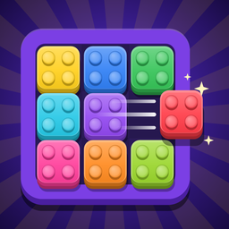

Slide each block out through its gate!
We're happy to help with questions, bugs or feedback. Send us an email and we'll get back to you as soon as possible.
Email SupportEmail: onelcan123@gmail.com
Please include your device model, iOS/Android version and the level number if your question is about a specific level.
Drag a block with your finger and bring it to the gate of the same color. If it fits, it slides out and shatters. Clear every block to win the level. You can also open How to Play from the main menu.
You earn 50 coins for every new level you clear. Spend them in the Shop on the Hammer and Freeze boosters. Purchased boosters are saved on your device.
It smashes a normal block. On ice, chains or locks it only breaks the blocker, and on two-color blocks it peels off the outer layer. It can't be used on blocks under a cover.
Yes. Open Settings from the main menu or the pause menu.
No. SlideZero works completely offline.
Your progress, coins and boosters are stored only on your device, so deleting the app also deletes them.